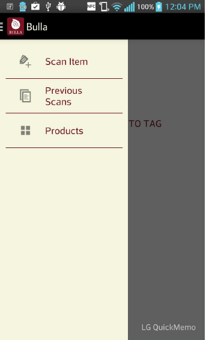
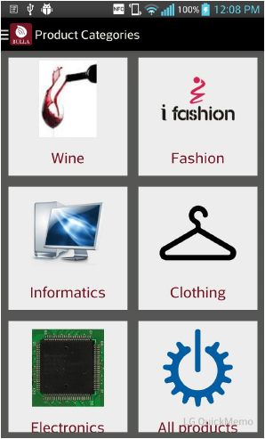
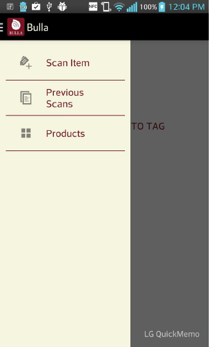
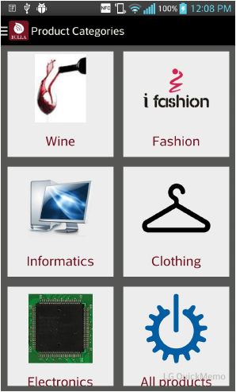
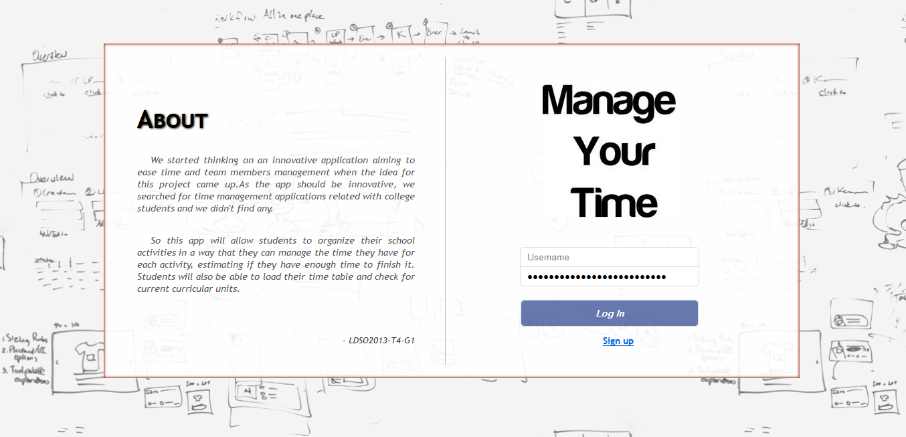
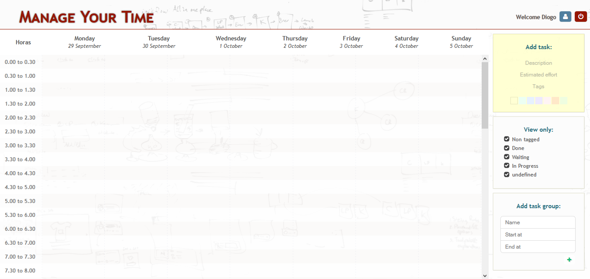
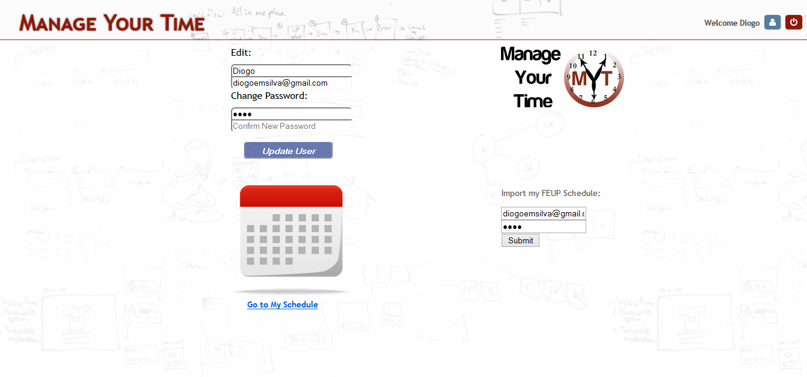

Academic Projects
Project Management Laboratory – Bulla
The Bulla project originated from the idea of developing a system that allows a retail customer to verify the authenticity of products belonging to a certain brand or producer, using only an Android smartphone. With a system like this, both the customer and the producer gain benefits, since the customer will trust the producer’s product, thus increasing the reputation of that brand. On top of that, with the reading of tags that are imprinted in the labels of the products, it is possible to send to the system’s server the information of where and when the readings took place. This data collection gives the brand the opportunity to extract some valuable conclusions through the analysis of all the information collected.
 



Database and Web Applications Laboratory – MYT
MYT stands for “Manage your time” and, like the name suggests is a tool that functions like a timetable in order to help the user organize his/her schedule. The aim is to ease time and team members management, specially for college students. Hopefully, this app will allow students to organize their activities, managing and estimating the time need for each activity. FEUP students should also be able to load their current curricular units. The following are screenshots from an example account we used for presentation.
  Talk A Bit
An annual conference organized by MIEIC's finalists regarding topics in the area and invited talks. In this particular edition (2014/15) I was in charge of the publicity department for the event.
Visit the official page or visit the official Facebook page.